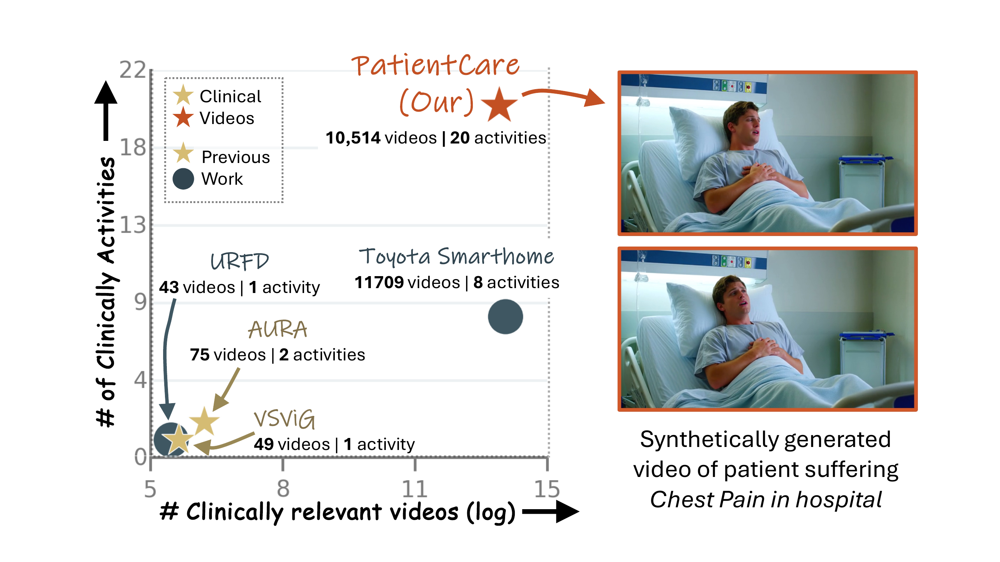
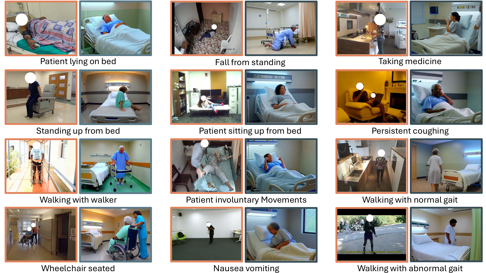

Under Review

AI-driven patient care has significant potential to improve clinical safety while reducing clinical staff workload and operational costs. However, privacy and regulatory constraints limit the availability of diverse clinically relevant datasets, slowing progress in this area. Existing patient action recognition is typically fragmented across non-clinical datasets, overlooking fine-grained, hospital context activities, e.g. coughing, bedside exercises, etc. In this work, we introduce PatientCare, a clinically relevant benchmark comprising 20 fine-grained patient activities across 1,110 public real-world proxy videos and 9,404 synthetic hospital-context videos; enabling more representative recognition. We conduct extensive evaluations of state-of-the-art action recognition models and MLLMs on both domains, demonstrating the complexity of patient care, while analyzing the role of synthetic training on scarce real-world data. Our results reveal the key challenges of distinguishing visually similar activities based on subtle body and hand movements, as well as the failure of models in recognizing actions when performed by patients lying on hospital beds. We will release the dataset, benchmarks, and code upon acceptance.
